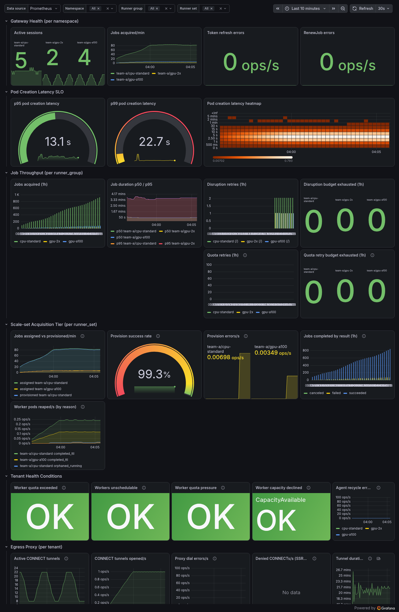
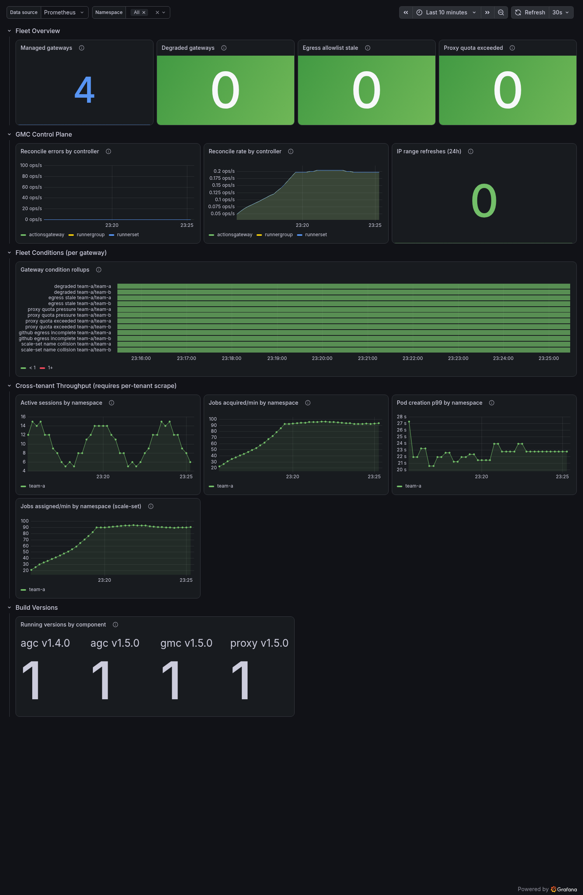

Grafana Dashboards¶
Audience: SRE, Platform engineer
Part of the Observability guide. The panels below query the Metrics reference and the SLO recording rules; the scrape wiring they depend on is in Accessing metrics.
Import as code. Two reference dashboards ship under
deploy/monitoring/— import them into Grafana (Dashboards → New → Import) or provision them, rather than rebuilding the panels by hand. They split along the scrape boundary each reads from; the layouts below document what each contains.
| Dashboard | Source scrape | Audience |
|---|---|---|
grafana-dashboard-tenant.json |
a tenant's AGC + egress proxy (per-tenant mTLS) | operator of one tenant's runners |
grafana-dashboard-platform.json |
the GMC manager (one cluster-wide TLS scrape) | SRE running the GMC / the fleet |
The split mirrors how the metrics are exposed (see Accessing metrics): a platform operator scrapes the single GMC endpoint and cannot necessarily reach every tenant's mTLS metrics port, so the fleet rollups the GMC exports (managed_gateways, runnergroups_degraded, egress_rules_stale, the proxy-quota gauges) get their own dashboard.
The screenshots below are rendered against a real Prometheus with synthetic data by the reproducible harness in
deploy/monitoring/preview/; regenerate them there whenever a dashboard changes.
Tenant dashboard¶

Filtered by the $namespace, $runner_group, and $runner_set template variables. Uses the SLO recording rules as data sources where applicable.
Row 1 — Gateway Health (per namespace)
| Panel | Query | Visualization |
|---|---|---|
| Active sessions | actions_gateway_active_sessions |
Stat / Time series |
| Jobs acquired/min | rate(actions_gateway_jobs_acquired_total[5m]) * 60 |
Time series |
| Token refresh errors | rate(actions_gateway_token_refresh_errors_total[5m]) |
Stat (threshold: >0 = red) |
| RenewJob errors | rate(actions_gateway_renew_job_errors_total[5m]) |
Stat (threshold: >0 = yellow) |
Row 2 — Pod Creation Latency SLO
| Panel | Query | Visualization |
|---|---|---|
| p95 latency | actions_gateway:pod_creation_latency_seconds:p95 |
Gauge (green <15s, yellow <60s, red >60s) |
| p99 latency | actions_gateway:pod_creation_latency_seconds:p99 |
Gauge |
| Latency heatmap | rate(actions_gateway_pod_creation_latency_seconds_bucket[5m]) |
Heatmap |
Row 3 — Job Throughput (per runner_group)
| Panel | Query | Visualization |
|---|---|---|
| Jobs acquired total | increase(actions_gateway_jobs_acquired_total[1h]) |
Bar chart by runner_group |
| Job duration p50/p95 | actions_gateway:job_duration_seconds:p50/p95 |
Time series |
| Disruption retries | sum by (runner_group, tier, cause) (increase(actions_gateway_eviction_retries_total[1h])) |
Bar chart, split by acquisition tier (classic, scaleset) and cause (eviction, preemption). Keep the causes visually distinct: eviction rising means node pressure, preemption rising means a priorityTiers floor is displacing opportunistic work — different investigations entirely |
| Disruption budget exhausted | increase(actions_gateway_eviction_retries_exhausted_total[1h]) |
Stat (threshold: >0 = red) |
| Quota retries | increase(actions_gateway_quota_retries_total[1h]) |
Bar chart |
| Quota retry budget exhausted | increase(actions_gateway_quota_retries_exhausted_total[1h]) |
Stat (threshold: >0 = red) |
Row 4 — Scale-set Acquisition Tier (per runner_set)
The default acquisition protocol (Q264). These panels are the scale-set analog of the classic Gateway-Health and Job-Throughput rows above: a ScaleSet-protocol RunnerSet never emits actions_gateway_active_sessions or jobs_acquired_total, so its throughput and health are only visible here. Labelled by runner_set (not runner_group), so the $runner_group variable does not filter these — the $runner_set variable does.
| Panel | Query | Visualization |
|---|---|---|
| Jobs assigned vs. provisioned/min | sum by (namespace, runner_set) (rate(actions_gateway_scaleset_jobs_assigned_total[5m])) * 60 and the …_provisioned_total counterpart |
Time series (a persistent gap = provisioning lagging) |
| Provision success rate | actions_gateway:scaleset_provision_success_rate:rate5m |
Gauge (green >0.99, yellow <0.99, red <0.9) |
| Provision errors/s | sum by (namespace, runner_set) (rate(actions_gateway_scaleset_provision_errors_total[5m])) |
Stat (threshold: >0 = yellow) |
| Jobs completed by result (1h) | sum by (result) (increase(actions_gateway_scaleset_jobs_completed_total[1h])) |
Bar chart by result |
| Worker pods reaped/s (by reason) | sum by (namespace, runner_set, reason) (rate(actions_gateway_worker_pods_reaped_total{runner_set!=""}[5m])) |
Time series — the reaper counter's scale-set series (Q514), joinable with the capacity gauges above on (namespace, runner_set) |
Row 5 — Tenant Health Conditions
| Panel | Query | Visualization |
|---|---|---|
| Worker quota exceeded | max(actions_gateway_worker_quota_exceeded or actions_gateway_runnerset_worker_quota_exceeded) |
Stat (1 = red) |
| Workers unschedulable | max(actions_gateway_workers_unschedulable or actions_gateway_runnerset_workers_unschedulable) |
Stat (1 = red) |
| Worker quota pressure | max(actions_gateway_worker_quota_pressure or actions_gateway_runnerset_worker_quota_pressure) |
Stat (1 = yellow) |
| Worker capacity declined | max by (reason) (actions_gateway_runnerset_worker_capacity_declined) |
Stat (1 = orange), reason shown beside the value |
| Agent recycle errors | rate(actions_gateway_agent_recycle_errors_total[5m]) |
Time series |
The first three capacity panels union the v1
RunnerGroupfamily with itsactions_gateway_runnerset_*v2 twin (Q319). The two families key on different labels —runner_groupandrunner_set— soorunions rather than overlaps them, and a panel that named only the v1 family would read a flat0on a v2-only deploy. To break either out per owner, replacemax(...)withmax by (namespace, runner_set) (actions_gateway_runnerset_...).Worker capacity declined has no v1 twin, and
No datais a normal reading (Q643, Q658). The gauge is emitted only for aRunnerSetthat setspec.capacityGate.mode, so an empty panel means no set opted in, not that the query is broken. It groups byreasonrather than reducing to a bare0/1because the value alone cannot separate a live decline from the latchedAwaitingProbestate, and those call for different actions; exactly one series exists per gated set, somax by (reason)cannot double-count. The1is orange rather than red on purpose: a latched gate is throttling intake, not failing, and it can sitTrueindefinitely on an idle set whose shape stays unplaceable.
Row 6 — Egress Proxy (per tenant)
| Panel | Query | Visualization |
|---|---|---|
| Active CONNECT tunnels | actions_gateway_proxy_connections_active |
Time series |
| CONNECT tunnels opened/s | rate(actions_gateway_proxy_connections_total[5m]) |
Time series |
| Proxy dial errors/s | rate(actions_gateway_proxy_dial_errors_total[5m]) |
Time series |
| Denied CONNECTs/s (SSRF signal) | rate(actions_gateway_proxy_connect_denied_total[5m]) |
Time series |
| Tunnel duration p95 | histogram_quantile(0.95, rate(actions_gateway_proxy_tunnel_duration_seconds_bucket[5m])) |
Time series |
Row 7 — Proxy & Quota (kube-state-metrics)
| Panel | Query | Visualization |
|---|---|---|
| Proxy replicas ready | kube_deployment_status_replicas_ready{deployment="actions-gateway-proxy"} |
Time series |
| HPA desired vs. current | kube_horizontalpodautoscaler_status_*_replicas |
Time series |
| ResourceQuota usage | kube_resourcequota{type="used"} filtered by namespace |
Bar gauge |
Row 7 — Reliability Signals (Q315)
| Panel | Query | Visualization |
|---|---|---|
| Job acquisition errors/s (by reason) | sum by (namespace, reason) (rate(actions_gateway_job_acquisition_errors_total[5m])) |
Time series |
| Message poll errors/s (by reason) | sum by (namespace, reason) (rate(actions_gateway_message_poll_errors_total[5m])) |
Time series |
| RenewJob teardowns/s (by reason) | sum by (namespace, reason) (rate(actions_gateway_renew_job_teardowns_total[5m])) |
Time series |
| Worker pods reaped/s (by reason) | sum by (runner_group, reason) (rate(actions_gateway_worker_pods_reaped_total[5m])) |
Time series |
| Broker token propagation retries/s | sum by (runner_group) (rate(actions_gateway_broker_token_propagation_retries_total[5m])) |
Time series |
Row 8 — Fan-out Safety (Q260 / Q266)
| Panel | Query | Visualization |
|---|---|---|
| Duplicate job deliveries/s | sum by (runner_group) (rate(actions_gateway_jobs_duplicate_delivery_total[5m])) |
Time series |
| Abandoned-delivery completions/s (by outcome) | sum by (runner_group, outcome) (rate(actions_gateway_abandoned_delivery_completions_total[5m])) |
Time series |
| Fan-out loser recycle deferred/s (by outcome) | sum by (runner_group, outcome) (rate(actions_gateway_fanout_loser_recycle_deferred_total[5m])) |
Time series |
Platform dashboard¶

Fleet-wide; $namespace filters the cross-tenant rows.
Row 1 — Fleet Overview
| Panel | Query | Visualization |
|---|---|---|
| Managed gateways | actions_gateway_managed_gateways |
Stat |
| Degraded gateways | sum(actions_gateway_runnergroups_degraded) (v1) / sum(actions_gateway_runnersets_degraded) (v2) |
Stat (>0 = red) |
| Egress allowlist stale | sum(actions_gateway_egress_rules_stale) |
Stat (>0 = red) |
| Proxy quota exceeded | sum(actions_gateway_proxy_quota_exceeded) |
Stat (>0 = red) |
Row 2 — GMC Control Plane
| Panel | Query | Visualization |
|---|---|---|
| Reconcile errors by controller | rate(controller_runtime_reconcile_errors_total[5m]) |
Time series |
| Reconcile rate by controller | rate(controller_runtime_reconcile_total[5m]) |
Time series |
| IP range refreshes (24h) | sum(increase(actions_gateway_ip_range_updates_total[24h])) |
Stat |
Row 3 — Fleet Conditions (per gateway)
| Panel | Query | Visualization |
|---|---|---|
| Gateway condition rollups | actions_gateway_runnergroups_degraded / _egress_rules_stale / _proxy_quota_pressure / _proxy_quota_exceeded (v1); _runnersets_degraded / _agc_available / _egress_unattributed (v2); _github_egress_incomplete (v2 EgressProxy only) |
State timeline (1 = firing) |
Row 4 — Cross-tenant Throughput (requires the per-tenant AGC scrapes)
| Panel | Query | Visualization |
|---|---|---|
| Active sessions by namespace | sum by (namespace) (actions_gateway_active_sessions) |
Time series |
| Jobs acquired/min by namespace (classic) | sum by (namespace) (rate(actions_gateway_jobs_acquired_total[5m])) * 60 |
Time series |
| Jobs assigned/min by namespace (scale-set) | sum by (namespace) (rate(actions_gateway_scaleset_jobs_assigned_total[5m])) * 60 |
Time series |
| Pod creation p99 by namespace | actions_gateway:pod_creation_latency_seconds:p99 |
Time series |
Dashboard Variables¶
The dashboards ship with these template variables already wired:
$namespace—label_values({__name__=~"actions_gateway_active_sessions|actions_gateway_scaleset_jobs_assigned_total"}, namespace)— filters to a single tenant (both dashboards). The union of the classic and scale-set series is deliberate: a scale-set-only deploy emits noactive_sessions, so keying the variable on that alone would leave the dashboard blank.$runner_group—label_values(actions_gateway_active_sessions{namespace="$namespace"}, runner_group)— filters to a specific RunnerGroup on the classic-tier panels (tenant dashboard). Therunner_set-labelled panels are not filtered by it;$runner_setis their variable.$runner_set—label_values(actions_gateway_runnerset_worker_quota_pressure{namespace="$namespace"}, runner_set)— filters to a specificRunnerSeton the scale-set and v2 capacity panels (tenant dashboard). It reads its label values from the Q319 capacity gauges rather than thescaleset_*series on purpose: those gauges are emitted for everyRunnerSet, whilescaleset_*exists only forScaleSet-protocol sets, so keying on the latter would hide aClassicset from the dropdown entirely.
← Back to Observability